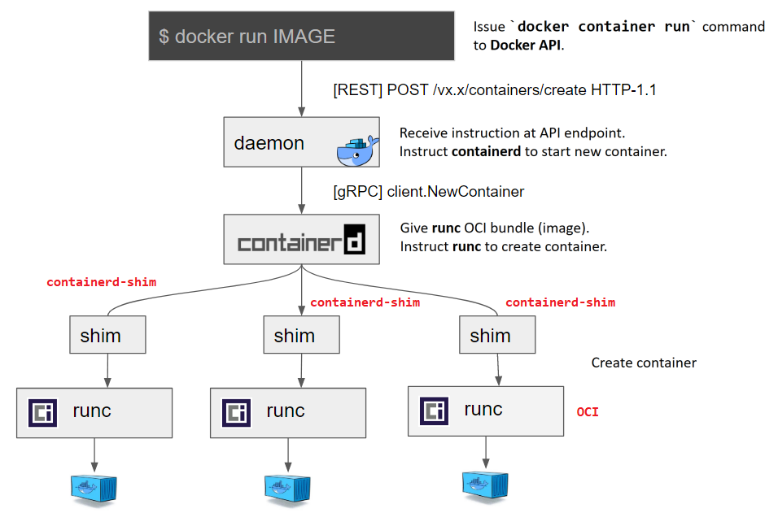
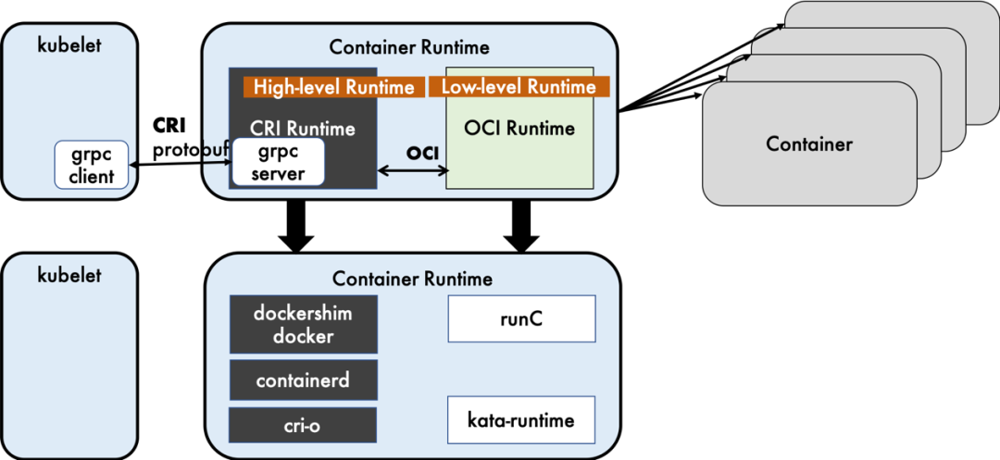

容器运行时runtime演进与架构概述
文档说明：
- 该文档未说明Kata Container、gVisor等强隔离的容器runtime。
Docker架构的技术演进：
- Docker项目早先已由Docker公司贡献于社区成立Moby项目（Docker CE）。
- 从Docker 1.11版本开始至Docker 17.x版本（或更高版本）逐步将Docker Daemon解耦成
docker与containerd两个独立的项目，拆分docker的功能。
- 以下以Docker 1.13.x与Docker 17.x版本（或更高版本）为例说明各组件关系。
- Docker 1.13.x组件关系示意：
docker、dockerd、docker-containerd、docker-containerd-shim、docker-runc

- Docker 17.x（或更高版本）组件关系示意：
1. docker、dockerd、containerd、containerd-shim、runc
2. dockerd守护进程与containerd实现解耦拆分
3. 在低层次上（low-level）containerd可实现与dockerd类似的功能，如容器的创建、
运行与销毁，容器镜像的拉取与推送等。


- Docker 18.09.0与19.03.13进程关系示意：


containerd概述：
- 2016年12月14日，Docker公司宣布将containerd从Docker Engine中分离，并捐赠到一个
新的开源社区独立发展和运营，“一个工业标准的容器运行时，注重简单、健壮性、可移植性”。
- Docker 1.11的Docker Engine里就包含了containerd，而现在则是把containerd从Docker
Engine里彻底剥离出来，作为一个独立的开源项目独立发展，目标是提供一个更加开放、稳定
的容器运行基础设施。
- 需要独立的containerd的原因：
1. 继续从整体Docker Engine中分离（开源项目的思路）
2. 可以被Kubernets CRI等项目使用（通用化）
3. 为广泛的行业合作打下基础（像runC一样）
- Docker对容器的管理和操作基本都是通过containerd完成的。
- containerd可以在宿主机中管理完整的容器生命周期：
1. 管理容器的生命周期：从创建容器到销毁容器
2. 拉取、推送容器镜像
3. 存储管理：管理镜像及容器数据的存储
4. 调用runC运行容器
5. 管理容器网络接口及网络：使用CNI容器网络接口
- containerd并不是直接面向开发人员或终端用户使用，而是主要用于集成到更上层的系统里，
如Swarm、Kubernetes、Mesos等容器编排系统。
- containerd以守护进程的形式运行在系统上，通过 unix domain socket 暴露很低层的
gRPC API，上层系统可以通过这些API管理机器上的容器。
- 每个containerd只负责一台主机，拉取镜像，对容器的操作（启动、停止等），网络、存储
都是由containerd完成。
- 具体运行容器由runC负责，实际上只要是符合OCI规范的容器都可以支持。
- containerd架构示意：

- containerd的应用：
1. docker镜像和containerd镜像通用，但组织方式和存放目录不同，导致docker与ctr命令
不通用，各自管理自己的镜像和容器！
2. containerd的默认配置文件：/etc/containerd/config.toml
3. ctr命令行工具使用：
$ sudo ctr images ls
# 查看containerd镜像
$ sudo ctr images pull docker.io/library/busybox:latest
# 拉取containerd镜像
* 注意：必须使用镜像的完整名称，否则报错！
$ sudo ctr run -t docker.io/library/nginx:latest mynginx
# 运行containerd容器
$ sudo ctr plugins ls
# 查看containerd支持的插件


4. containerd 1.2.x无法拉取containerd镜像的issue，升级containerd后可正常使用。

容器运行时runtime分类：
- CNCF云原生计算基金会的Landscape中容器runtime项目：

Kubernetes中Docker容器runtime示例：
- 以kubelet集成Docker容器runtime为例，解释kubelet如何创建容器。

* Step 1：
1. kubelet通过 CRI 接口（gRPC）调用 dockershim，请求创建容器。
2. CRI即容器运行时接口（container runtime interface），这一步中，kubelet
可视作一个简单的CRI Client，而dockershim就是接收请求的Server。
3. 目前 dockershim 的代码内嵌在 kubelet 中，所以接收调用的就是 kubelet 进程。
* Step 2：
dockershim收到请求后，转化成Docker Daemon可接收的请求，发送到Docker Daemon
请求创建一个容器。
* Step 3：
Docker Daemon早在1.11版本中就已经将针对容器的操作移到另一个守护进程，即
containerd中，因此Docker Daemon仍然不能创建容器，而需请求 containerd 创建容器。
* Step 4：
1. containerd收到请求后，并不会直接去操作容器，而是创建 containerd-shim
的进程，让containerd-shim去操作容器。
2. 因为容器进程需要一个父进程来做诸如收集状态，维持STDIN等fd打开等工作。
* Step 5：
1. 创建容器需要设置 namespaces 和 cgroups，挂载 rootfs 等操作，而这些操作
需通过 OCI（open container initiative，开放容器标准）。
2. OCI的一个参考实现称为 runC。
3. containerd-shim需要调用runc命令行启动容器。
* Step 6：
1. runc启动完容器后本身会直接退出，containerd-shim则会成为容器进程的父进程，
负责收集容器进程的状态，上报给containerd。
2. 在容器中 PID 为 1 的进程退出后接管容器中的子进程进行清理，确保不会出现
僵尸进程。
容器发展史简要回顾：
- K8s最开始的runtime架构远没这么复杂，kubelet要创建容器直接调用Docker Daemon即可，
而那时也不存在containerd，Docker Daemon自己调用libcontainer库运行起来，整个过程
即完成。
- 然而，随着容器圈的一系列政治斗争，先是Google与Red Hat等认为运行时标准不能被Docker
一家公司控制，于是就创建了OCI开放容器标准。
- Docker则将 libcontainer 库封装成 runC，将其贡献作为OCI的参考实现。
- 接着 rkt 想从Docker那分一杯羹，希望K8s原生支持rkt作为运行时，而且PR还真将其合并。
- 但是，这样也造成在同时处理两种 runtime 的兼容性问题。
- 因此，负责维护kubelet的 sig-node 小组在 Kubernetes 1.5 推出 CRI 机制，即容器运行
时接口（container runtime interface），只要能实现该接口，即能成为runetime。
- 不过CRI本身只是K8s推的标准，当时的K8s尚未达到如今的主导地位，容器运行时当然不能跟
K8s绑死只提供CRI接口，于是就有了 shim（垫片）。
- shim 的职责就是作为接头将各种容器运行时本身的接口适配到 CRI 接口上。
- 接下来Docker开发 Swarm 进军PaaS市场，将Docker做架构切分，把容器操作都转移到单独的
containerd 守护进程中，使Docker Daemon专门负责上层的封装编排。
- 可惜Swarm惨败于K8s，之后Docker公司将 containerd 项目捐给CNCF。
- 最后Docker公司专注于开发Docker企业版。
- 尽管已经有 CRI-O、containerd-plugin 这种更精简轻量的runtime，dockershim
作为经受最多生产环境考验的方案，迄今为止仍是K8s默认的runtime实现。
OCI、runC与CRI概述：
- OCI：开放容器标准，其实就是一系列文档，其中主要规定了两点。
1. 规定容器镜像，即 ImageSpec。
主要定义一个 OCI image，该镜像由 manifest、image index（optional）、
filesystem layers、以及 configuration 组成。
该规范的目的在于确保能构建一套不同容器引擎间可互操作的工具，用于镜像的构建、
传输，以及镜像运行准备工作。
2. 主要定义如何配置容器、执行环境以及容器生命周期中需要能接收哪些指令，这些
指令的行为是什么，即 RuntimeSpec。
其中的大致内容为容器要能执行"create"、"start"、"stop"、"delete"这些命令，
且行为要规范。
- runC：OCI的一种参考实现
1. 由libcontainer库演变而来，并且由Docker捐献给 Linux 基金会。
2. libcontainer库直接使用Linux内核提供的相关隔离技术，如 namespace、cgroups。
3. 它能按照标准将符合标准的容器镜像运行起来。
- 标准的好处就是方便搞创新，只要能符合标准，都能与生态圈中的其它工具一起工作。
- 那么镜像就可以用任意的工具去构建，容器就不一定非要用namespace和cgroups来隔离。
- 这就让各种虚拟化容器（Kata Container）可以更好地参与到生态圈当中。
- CRI：单纯是一组 gRPC 接口，可归纳为几套核心接口。
1. 针对容器操作的接口，包括创建、启停容器等。
2. 针对镜像操作的接口，包括拉取镜像、删除镜像等。
3. 针对 PodSandbox（容器沙箱环境）的操作接口。
* Pod and container lifecycle management：

* Exec/attach/port-forward requests：

4. CRI的工作原理：
CRI定义了一组关于Pod、Container与Image的gRPC接口，若cri-runtime与其对接，只需
开发出一套相应的cri-runtime连接 shim 即可，就能被kubelet所调用。

- 因此，可以找到很多符合OCI标准或兼容了CRI接口的项目，而这些项目就大体构成了
整个Kuberentes的runtime生态：
1. OCI compatible：
runC、Kata（以及其前身runV和Clear Containers）、gVisor、railcar（Rust）
2. CRI compatible：
Docker（借助dockershim）、containerd、CRI-O、frakti
- OCI和CRI的区别与联系，最容易让人产生混淆的一大原因就是社区里糟糕的命名。
- 以上的项目统统可以称为容器运行时（container runtime），彼此之间区分的办法就是给
“容器运行时” 这个词加上各种定语和从句来进行修饰。
- 显然，container runtime就不是好名字，更准确的说法：cri-runtime、oci-runtime
- 通过这个粗略的分类，其实可以总结出整个runtime架构不变的三层抽象：
Orchestration API --> Container API --> Kernel API
- 其中K8s已经是Orchestration API的事实标准，而Container API的接口标准就是
CRI，由cri-runtime实现，Kernel API的规范是OCI，由oci-runtime实现。
Kubernetes中containerd及CRI-O为容器runtime的架构演进：
- 之前使用Docker的架构确实有点复杂，而复杂是万恶之源（其本质就是替代Docker）。
- 于是就促成直接使用 containerd 作为 oci-runtime 的方案。
- 当然，containerd还需要适配系统以对接CRI，该适配工作交由一个 shim 来完成。
- containerd 1.0中，对CRI的适配通过一个单独的进程 CRI-containerd 来完成。


- containerd 1.1中直接去除CRI-containerd进程，将适配逻辑作为插件放进containerd
主进程中，调用链如下所示：
kubelet --> CRI-plugin（在containerd主进程中）--> containerd

- 但与此同时，社区就已经有了一个更为专注的cri-runtime，即 CRI-O。
- 它非常纯粹，兼容CRI和OCI，作为K8s与OpenShift专用的容器运行时。
- 其中 conmon 对应 containerd-shim，大体意图是一致的。

- containerd与CRI-O架构总结：


CRI-O与Podman架构示意：
- CRI-O与kubelet集成方式：


- Podman运行容器的方式：
1. Podman曾经是CRI-O项目中的一部分，后来被分离出成为一个独立的项目，即 libpod。
2. Podman（Pod Manager）的目标是提供与 Docker 相似体验的container CLI，提供給
使用者创建与运行容器。

参考链接：
- 容器技术生态概览：
- containerd简述：
- 白话Kubernetes Runtime：
- 容器运行时概述：
- Kubernetes官方手册中对CRI的说明：
- GitHub中对CRI的说明：